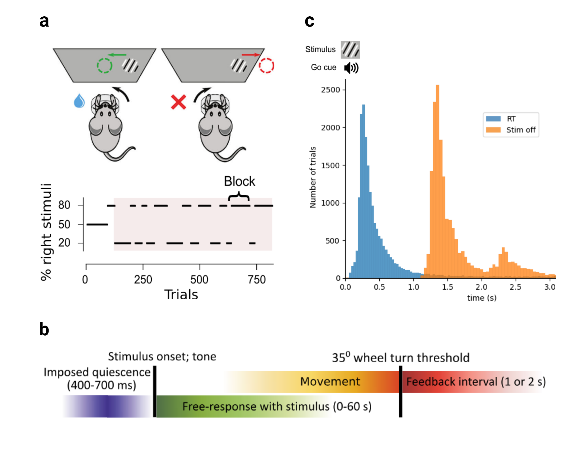
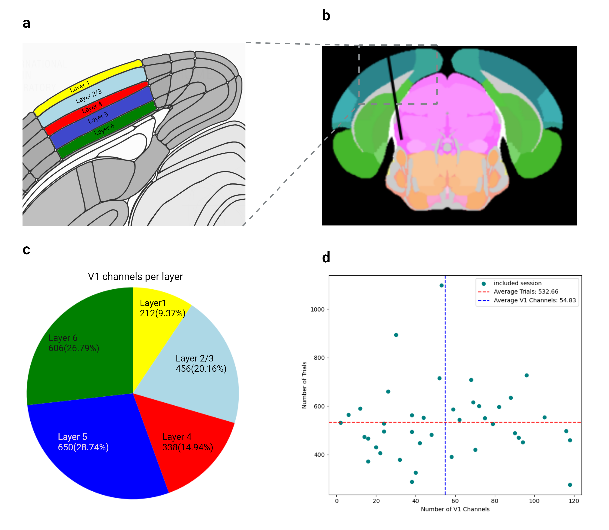
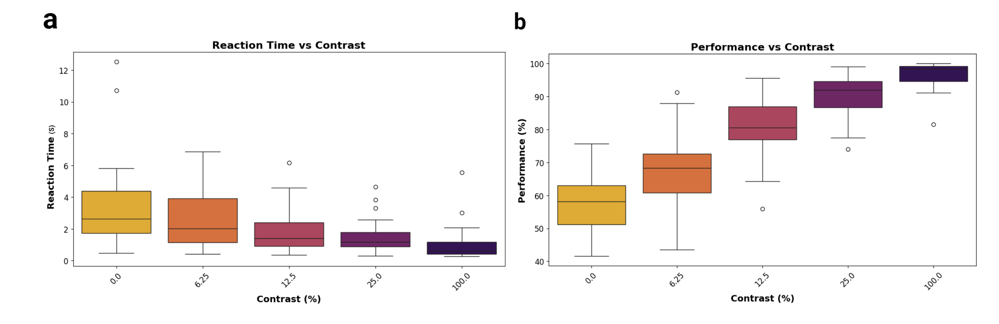
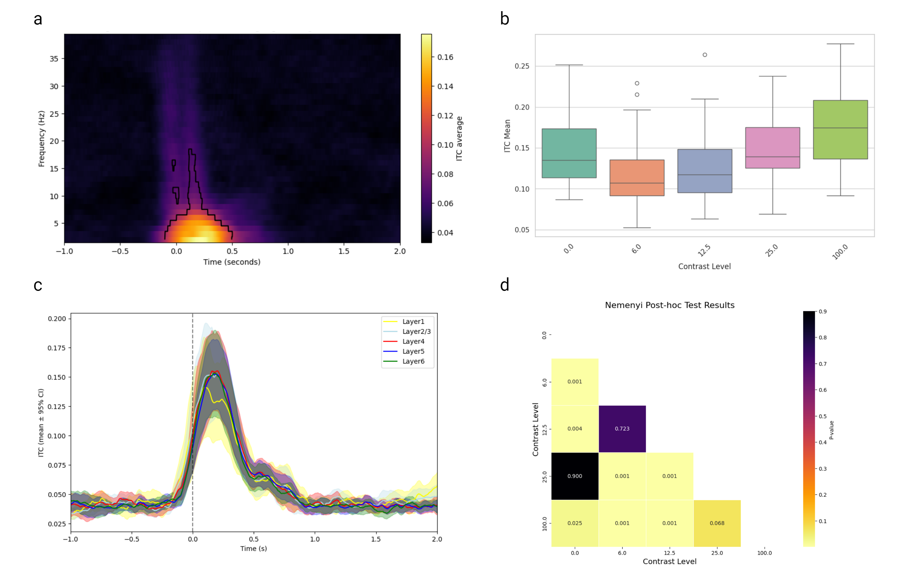
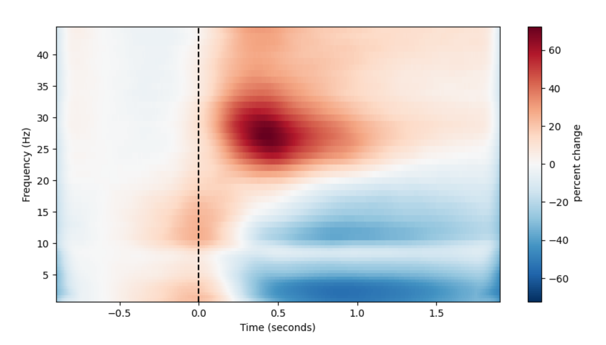
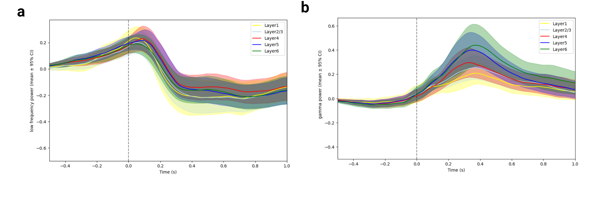
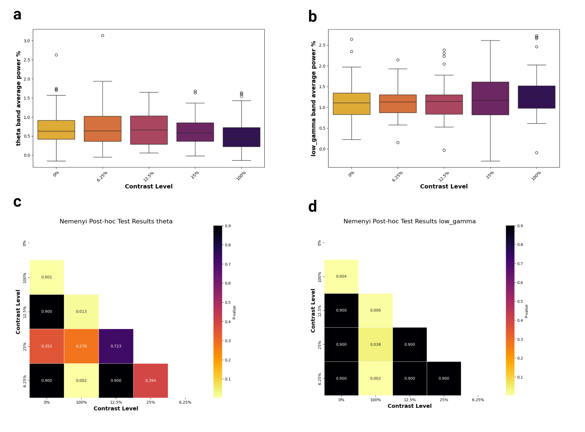
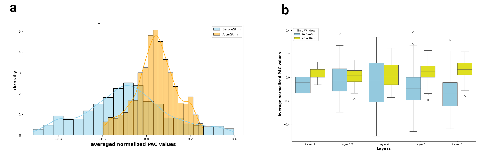

Introduction
Background
How does the brain efficiently process the overwhelming amount of sensory input that it receives from a constantly changing and uncertain environment? According to the predictive coding (PC) framework, the brain’s key solution is to actively predict incoming sensory input based on past observations and to prioritize the processing of unpredicted sensory information (Huang and Rao 2011). PC envisions the brain as a prediction machine, where predictions are made through prior experience or expectation. These predictions are compared to the actual sensory input, and the difference, known as prediction error, is used to refine the internal model of the environment and orient attention towards unexpected features of the input. This allows the brain to minimize the prediction error and allocate its finite resources more efficiently (Vinck, Uran, and Canales-Johnson 2022).
Predictive coding is generally thought to be implemented by the cortex. Indeed, the mammalian cortex is organized hierarchically, with lower level areas processing more basic sensory features and higher areas integrating this information into more complex representations (Felleman and Van Essen 1991). Visual cortex is a prime example of this hierarchy, with primary visual cortex (V1) processing simple visual features like contrast and edges, and higher visual areas(e.g. V2, V4) extracting more complex features of stimuli like texture and shape [XSX]. The hierarchy of cortical processing allows the brain to make predictions at multiple levels of abstraction and compare these predictions to the actual sensory input. according to PC the communication between hierarchical cortical areas occurs through feedforward (FF) and feedback (FB) connections. FB projections involve top-down propagation of prediction from higher to lower area while FF projections involve bottom up assembly of sensory input and prediction error from lower to higher areas to update the internal model. FF and FB connections have distinct laminar origins and targets within the cortex. FF connections mainly originate from layers 3 and 5 (of lower areas) and target the layer 4 (of higher area). while, FB connections arise from layers 2 and 6 (of higher area) and target all layers except for layer 4 (of lower area)(Vinck, Uran, and Canales-Johnson 2022).
Prominent studies in primates visual systems (Van Kerkoerle et al. 2014) suggest neural oscillations might play an important role in communication between cortical regions through FF-FB connections. The studies found that FF propagation is associated with gamma-band oscillations, while FB propagation involves alpha-band (8–12 Hz) oscillations. Similarly, a study on mice (Aggarwal et al. 2022) vision revealed FF waves in the 30–50 Hz range and FB waves in the 3-6 Hz range, where the phase of the FB oscillations modulated the amplitude of the FF oscillations. However, this was the only study on mice, to the best of my knowledge, that has investigated the FF-FB waves in the visual system. Additionally, the study utilized a simple visual stimulus that did not involve any prediction and higher-level cognitive processes.
The mouse visual system offers several advantages for studying predictive coding. The simpler and well-studied visual processing hierarchy in mice allows for more straightforward analysis of neural data. Genetic manipulation tools in mice also provide unique opportunities to explore cortical micro-circuitry and manipulate neural pathways, which is challenging in primates. Additionally, mouse studies are more cost-effective and logistically feasible compare to primates, making them an attractive model for large-scale explorations of complex brain functions like predictive coding.
The International Brain Laboratory (IBL) (Benson et al. 2023) provides an extensive open-access dataset recorded from more than 100 mice trained to perform a perceptual decision-making task. In this task, mice are presented with a visual stimulus of controlled contrast and are required to move the stimulus to the center of the screen using a steering wheel. The stimulus appears on the right or left side of the screen, with a fixed probability for blocks of trials to create a predictable yet changing probability that the correct response involves a rightward or leftward movement of the wheel. This latter feature is very interesting to study the neural implementation of predictive coding given since leveraging the block-dependent bias in trial distribution requires to constantly update a prior estimating how likely right or left stimuli are before they are even displayed.
Current project
So far, IBL researchers have focused most of their efforts on the detection, sorting and analysis of action potentials and firing rates, without prioritizing a specific brain region or a specific cognitive process. The overarching goal of the current project is to go beyond their data-driven analyses and to use the IBL dataset as a benchmark to study the neural implementation of predictive coding in the mammalian brain. In this perspective, we were particularly interested in local field potentials (LFP) and oscillatory electrophysiological signals in the theta (typically, between 2 to 7 Hz), alpha (7 to 15 Hz), beta (15 to 40 Hz) and gamma (40 to 200Hz).
Until recently, LFPs recorded in the IBL context have been left almost unexplored and the analysis of LFP signals produced by Neuropixel probes (as used by all IBL experiments) has received limited attention (Windolf et al. 2023). In other words, the current project represents a first step towards unlocking the great potential of the IBL dataset to constrain theories of predictive coding and brain communication through oscillations.
Thus, my first goal was to assess the quality and the usability of IBL LFP data through the careful development of preprocessing pipelines and the comparison of different artifact detection and signal re-referencing methods. My second goal was to confirm that a core principle of the communication through oscillations framework could be observed in the dataset. More precisely, we hypothesized that the visual cortex of mice would display a phase-amplitude coupling analogous to that observed in primates, with the phase of slow oscillation (theta or alpha) modulating dynamically the amplitude of a fast oscillation (gamma power) (Bonnefond and Jensen 2015). My third goal was to replicate and extend previous findings suggesting that, in the mouse visual cortex, the functional properties of theta oscillation between 2.5 and 5 Hz match some of the properties of alpha oscillations (i.e., between 7 to 15 Hz) in primates, including an anti-correlation with local firing rates and decreased power upon visual stimulation Senzai, Fernandez-Ruiz, and Buzsáki (2019).
Methods
Data source and recording details
International Brain Laboratory (IBL)
We used the open-access dataset from the International Brain Laboratory (IBL). IBL provides a comprehensive set of recordings collected from more than 100 mice across 11 laboratories performing a standardized perceptual decision-making task. Data are collected from 267 brain regions by inserting 547 Neuropixel probes covering most of the left hemisphere and spanning the forebrain, midbrain and cerebellum, as well as the right hindbrain (Benson et al. 2023).
Task detail
In the IBL task (Figure 1), head-fixed mice had to move a visual stimulus to the center by turning a wheel with their front paws. At the start of each trial, the mouse was required to refrain from moving the wheel for a quiescence period lasting between 400 and 700 milliseconds. After this period, a visual stimulus (Gabor patch) appeared on either the left or right side of the screen accompanied by a 100-millisecond tone (5 kHz sine wave). If the mouse correctly moved the stimulus to the center by turning the wheel over 35°, it received a 3 µL water reward. Incorrect responses or failing to respond within 60 seconds resulted in a 500-millisecond burst of white noise and a timeout (Benson et al. 2023). As shown in Figure 1c, mice typically responded quickly within 2 seconds. The stimulus is always presented for the first 1 second regardless of response time (RT). RT is defined as the time after stimulus when the wheel rotation exceeds the threshold.
The experiment began with 90 unbiased trials where the stimulus appeared equally on both sides. The stimulus contrast levels were presented in a ratio of [2:2:2:2:1] for contrasts [100%, 25%, 12.5%, 6%, 0%]. After this initial block, trials were organized into biased blocks where the likelihood of the stimulus appearing on one side was fixed at 20% for the left and 80% for the right in “right blocks” or vice versa in “left blocks.” These blocks consisted of 20 to 100 trials determined by a truncated geometric distribution with stimulus contrast levels ratio identical to those in the unbiased block. In 0% contrast trials where no stimulus was visible, the side assignment followed the block bias (e.g., right side for right blocks) (Benson et al. 2023).

Electrophysiological recording
The neural recordings were conducted using Neuropixel probes with 384 recording channels and 960 low-impedance sites on a single shank (Benson et al. 2023). Neuropixel probes are advanced silicon-based neural recording devices designed for high-density recording of neural activity across large populations of neurons with precise spatial and temporal resolution (Jun et al. 2017). After the recordings, electrode tracks were reconstructed by performing serial-section 2-photon microscopy. A region was then assigned to each recording site (and inferred single neurons) within the Allen Common Coordinate Framework (Benson et al. 2023).
Preprocessing of electrophysiological data
Exclusion of channels and trials
Local field potential (LFP) datasets alongside their corresponding behavioral data and channel locations were extracted for sessions that included at least one channel in the primary visual cortex. The destriping function of the IBL Python toolbox was applied as the first step of preprocessing to correct for the biases induced by the sequential acquisition of the raw voltage traces (IBL 2024). This was followed by downsampling from 1000 Hz to 500 Hz to decrease the size of the data files. Next, channels were excluded based on three criteria: (i) those not located the primary visual cortex, (ii) those displaying excessively high variance according to power spectral density, (iii) and those with an excessively low coherence with neighboring channels.
We faced an unexpected problem with IBL LFP data due to amplifier saturation. Indeed, Neuropixel probes (especially earlier version) have a limited dynamic range that was frequently exceeded during the task (in particular, when the animal licked the spout to harvest water reward). For the analysis of spikes, this issue is less problematic as it only prevent from detecting spikes during the saturation. However, for the analysis of LFP, it introduces very salient artifacts and dramatically increase inter-trial variance in power, amplitude and phase estimates, potentially leading to erroneous conclusions. Therefore, we designed a custom exclusion procedure tailored to capture this specific problem. Trials were excluded based on the skewness of the absolute value of their first-order temporal derivative (threshold set to 1.5). Indeed, high skewness values typically reflect the presence of sudden, large amplitude changes in an otherwise mostly flat signal. By excluding these trials, our analyses focus on more consistent and representative portions of the data, improving the reliability of the results. Unless specified otherwise, all remaining trials were included in the presented analyses (i.e., missed, incorrect and slow responses).
Common average reference
Unless otherwise specified, our electrophysiological analyses used a common average reference scheme. The common reference was recomputed as the mean of all channels of interest per animal (i.e., those located in the primary visual cortex), after excluding noisy channels). This approach was chosen to limit the influence of electrical potentials outside of visual areas as well as the influence of non-physiological noise.
Current Source Density (CSD)
To remove the effects of volume conduction on the LFP data and improve spatial resolution, we used Current Source Density (CSD) analysis. CSD is a technique that estimates the local current flow in the brain by calculating the second spatial derivative of the recorded potentials to reduce the influence of distant sources. First, the Euclidean distances between adjacent channels were computed using the channels’ location relative to the end of the probe (axial) and their location relative to the middle of the probe (lateral). The Euclidean distance between adjacent channels \(i\) and \(i \pm 1\) was calculated as:
\[ d_{i,i \pm 1} = \sqrt{(x_{i \pm 1} - x_i)^2 + (y_{i \pm 1} - y_i)^2} \]
Where \(d_{i,i \pm 1}\) is the distance between channel \(i\) and its adjacent channel \(i+1\) (next channel) or \(i-1\) (previous channel), \(x_i\) and \(x_{i \pm 1}\) are the axial coordinates of the channels, \(y_i\) and \(y_{i \pm 1}\) are the lateral coordinates.
Then the second spatial derivative of the LFP signals was computed as:
\[ CSD_i = \frac{V_{i+1} - V_i}{d_{i, i+1}^2} - \frac{V_i - V_{i-1}}{d_{i, i}^2} \]
Here \(CSD_i\) represents the current source density at channel \(i\), \(V_i\) is the voltage at channel \(i\), \(V_{i+1}\) and \(V_{i-1}\) are the voltages at the adjacent channels \(i+1\) and \(i-1\) respectively.
In one-dimensional CSD analysis, it is typically assumed that channels are spaced uniformly (i.e., \(d_{i i+1} = d_{i i-1}\)). However, in this project, we accounted for non-uniform spacing to enhance accuracy and enable the removal of noisy channels without risking the spread of artifacts to adjacent channels. The python script for CSD computation can be found in the “CSD_computation” Jupyter notebook in the GitHub repository.
Time-Frequency power analysis
For the time-frequency analysis, we chose the multitaper method. This method is known to be well-suited for situations where specific frequency bands are not preselected and the goal is a broad exploration of all frequencies. Multitaper parameters were selected in a way where frequency resolution was prioritized slightly over temporal resolution, especially at lower frequencies. In this regard, power and phase were calculated using MNE’s multitaper function with the following parameters: a frequency range of 2-45 Hz with a step size of 0.5 Hz for the 2-10 Hz range and 1 Hz for frequencies above 10 Hz and a time-bandwidth product of 3.5 with the number of cycles at each frequency point set to half of the corresponding frequency (\(\text{n-cycles} = \frac{f}{2}\)). These parameters were found to be optimal for our specific data and goals. A detailed comparison of different parameter settings can be found in the “tf_resolution” Jupyter notebook in the GitHub repository.
Baseline correction were applied to the time frequency data with baseline defined as the interval from -0.7 to -0.5 seconds relative to stimulus onset. For baseline correction, the percentage change method were used which can be expressed with the following formula:
\[ \text{Corrected Power}(t,f) = (\frac{P(t,f)-\text{Baseline}(f)}{\text{Baseline}(f)}) \times 100 \]
Where \(P(t,f)\) is the power at a specific time \((t)\) and frequency \((f)\), and \(\text{Baseline}(f)\) is the averaged power within the baseline interval for each frequency.
Inter trial Phase coherence (ITC)
Inter-trial phase coherence (ITC) was computed using MNE’s built-in function. ITC is a measure of the consistency of the phase of a signal across different trials at a given time and frequency. Mathematically, ITC is calculated as the magnitude of the average of normalized complex phase values across trials. For each trial, the phase of the signal, denoted as \(\phi(f, t)\), is extracted at each frequency \(f\) and time point \(t\). These phase values are then represented as unit vectors on the complex plane, i.e., \(e^{i\phi(f, t)}\).
The ITC at a particular time-frequency point is then defined as:
\[ \text{ITC}(f, t) = \left| \frac{1}{N} \sum_{n=1}^{N} e^{i\phi_n(f, t)} \right| \]
where \(N\) is the number of trials, and \(\phi_n(f, t)\) is the phase at frequency \(f\) and time \(t\) for the \(n\)-th trial. The resulting ITC value ranges from 0 to 1, where 0 indicates no phase consistency across trials, and 1 indicates perfect phase alignment across all trials.
Phase-Amplitude Coupling
Phase-Amplitude Coupling (PAC) quantifies the interaction between the phase and amplitude of two distinct frequency bands, typically involving the phase of a low-frequency oscillation and the amplitude of a high-frequency oscillation. In this study, PAC was computed for phase frequencies ranging from 2 to 7 Hz and amplitude frequencies from 25 to 80 Hz using the TensorPAC Python module (Combrisson et al. 2020). The process begins with the extraction of the instantaneous phase of the low-frequency signal and the amplitude envelope of the high-frequency signal carried out through Morlet wavelets. The interaction between these signals is then evaluated to determine how the phase of slower oscillations modulates the amplitude of faster oscillations. In this project, the Gaussian Copula (GC) method was employed to compute PAC for a time window spanning 500 ms before stimulus onset to 1 second after the stimulus. Compared to other methods such as Phase Locking Value, GC is more robust to shifts in overall signal amplitude (Combrisson et al. 2020).
The core of the GC method involves calculating the mutual information between normalized amplitude and phase to quantify the degree to which the phase of the low-frequency oscillation governs the amplitude of the high-frequency oscillation. This mutual information provides a lower-bound estimate of the PAC that is robust to overall amplitude shifts. Mathematically, this can be expressed as: \[ gcPAC = I(a(t); \sin(\phi(t)), \cos(\phi(t))) \]
Where \(I\) denotes the mutual information, \(a(t)\) represents the normalized amplitude signal, and \(\phi(t)\) represents the normalized phase signal.
After computing PAC, the values were normalized for each channel using z-score normalization, which involves subtracting the mean and dividing by the standard deviation. This process standardizes the PAC values and makes them comparable across channels and subjects. Following normalization, the values were averaged across all frequencies and for two distinct time windows: before the stimulus (-0.5 to 0 seconds) and after the stimulus (0 to 1 second).
Statistical Analysis
Analysis of variance (ANOVAs)
Cluster-based statistics
multiple comparison for time frequency ITC estimate
Results
Data summary
A total of 63 probes were identified in the IBL datasets, with at least one channel assigned to the primary visual cortex (V1) (see fix X a;b for one insertion example). From the initial dataset, 7 and 15 insertions were excluded due to over 40% noisy channels and trials, respectively. In the end, 41 insertions were retained, consisting of 2,262 total channels and 25,075 trials. On average, each probe was associated with 54.83 channels in V1 (range: 2 to 118), with an average of 532.66 trials per session (range: 276 to 1,098) (see fig X d ) . Among the total number of channels, 212 (9.37%) were in layer 1, 456 (20.16%) in layer 2/3, 338 (14.94%) in layer 4, 650 (28.74%) in layer 5, and 606 (26.79%) in layer 6 (see fig X c).

Behavioral results
In line with previous results on whole sessions, mice performed correctly on 80.7% ± 5.8% (mean ± s.d.) of the trials with reaction time (RT) of 1.73 ± 5.7 seconds (mean ± s.d.). RT is defined as the time interval between stimulus onset and when wheel rotation reach threshold of 35° ; and performance is computed as a percent of correct trials over total number of trials. As illustrated in (fig X a;b), Performance improved and reaction times decreased on trials with higher stimulus contrast. In 0% contrast trials, where mice had to rely only on their expectation and prior experience, they made correct choices in 57% ± 8% (mean ± s.d.).

Inter trial phase coherence (ITC)
The ITC analysis indicated significant phase alignment in the low-frequency range (2-8 Hz) within the [0, 0.5] second interval following the stimulus (see Fig. X a). To ensure that these findings were not due to chance and to correct for multiple comparisons, we applied the MNE one-sample cluster permutation test (refer to the Statistical Analysis section of the Methods for more details ). The significant clusters, marked by the black line in Fig. X a , demonstrate that the low-frequency ITC during the 0-0.5 second period was statistically meaningful, with a p-value of 0.001. Additionally, as illustrated in Fig. X c, there were no significant differences in ITC across the V1 layers in the low-frequency range.
To assess whether the observed ITC levels were influenced by the stimulus, ITC average levels were compared for each level of stimulus contrast. The average ITC was computed for the low-frequency range (2-8 Hz) and within the 0-0.5 second time window post-stimulus. As illustrated in Fig. X b, an increase in stimulus contrast generally resulted in a higher mean ITC. Interestingly, the only group of trials that did not support this trend was trials without stimulus (i.e. contrast 0%), which will be discussed in the next section.
To statistically evaluate whether the mean ITC was significantly affected by contrast levels, further analysis was undertaken. Given that the Shapiro-Wilk normality test did not confirm normality in the data distribution, the Friedman test, a non-parametric alternative to repeated measures ANOVA, was employed. The results of the Friedman test indicated a highly significant effect of contrast level on ITC mean, with a test statistic of 77.98 and a p-value of 4.66*10-16, indicating that variations in ITC across different contrast levels were unlikely to have occurred by chance. Due to the significant effect of contrast level on ITC mean identified by the Friedman test, a post-hoc Nemenyi test was performed to determine which specific contrast levels contributed to the observed differences. The Nemenyi test was chosen as it is appropriate for pairwise comparisons following a Friedman test. The post-hoc analysis results are presented in fig X d, with p-values indicating the significance of differences between each pair of contrast levels.

Time frequency analysis results
Although there was substantial variability across subjects, the time-frequency analysis of V1 revealed two notable oscillations in relation to the visual stimulus: first, an increase in high-frequency power within the gamma band range (20–40 Hz), and second, a concurrent decrease in lower-frequency power within the 2–7 Hz range. The gamma increase was more transient, while the lower frequency inhibition persisted for a longer duration (see Figure X). As shown in Figure Xa,b, the observed frequency band changes exhibited a similar pattern across the different layers of V1. Statistical tests were not applied to quantitatively evaluate the layer-specificity of these effects, as the variability in the number of channels across layers and subjects did not allow for such an analysis.
The averaged power of each frequency band over the first 1 second after the stimulus was compared for trials with different contrast levels. The Friedman test revealed a statistically significant effect of contrast level on power modulation in both the low-frequency band (test statistic: 20.54, p-value: 0.00039) and the gamma band (test statistic: 18.88, p-value: 0.00083), indicating that power in these bands was significantly influenced by the stimulus contrast. However, as you can see in Figure Xa,b, the frequency band average power across different contrast levels is not quite observable. Additionally, the post-hoc test results shown in Figure Xc,d indicate that the comparisons were mainly significant only in comparison to the 100% contrast condition.
This not readily observable difference is believed to be mainly due to inter-subject variability, with some subjects showing significant contrast-related modulations, while others do not. In general, especially in sessions with high effects of contrast on power bands, higher contrast stimuli involved greater increases in gamma and decreases in theta band power.



Phase amplitude coupling (PAC)
Phase-amplitude coupling (PAC) analysis revealed that the phase of low-frequency oscillations (2-7 Hz) modulates the amplitude of high-frequency oscillations (25-80 Hz). In Figure X, an example from a single channel illustrates how the amplitude of high-frequency oscillations changes depending on the phase of low-frequency oscillations during the period after the stimulus. This example visually demonstrates the coupling effect; however, it is important to note that this figure serves solely as an illustration of the amplitude modulation by phase, and no specific coupling method (e.g., Gaussian copula) was applied to quantify this effect.

Comparing PAC values for the time periods before and after the stimulus revealed a significant increase in PAC values following the stimulus. This difference was confirmed by a repeated measures ANOVA, which resulted in F = 5.503, p = 0.0242. The distribution of average PAC values before the stimulus was centered slightly towards negative values (mean: -0.05) and exhibited large tails in both positive and negative directions (standard deviation: 0.05). In contrast, the distribution of PAC values after the stimulus was centered on positive values (mean: 0.02) with narrower tails (standard deviation: 0.01) (see Figure Xa).
In addition, we found that this difference between PAC values were more pronounced in layer five and six (see Figure Xb). As illustrated in Figure X, these two V1 layers were the only layers with F values higher than F-critical (approximately 4). However , similar to Time frequency analysis, no further statistical tests
were applied to quantitatively evaluate the layer-specificity due to the variability in the number of channels across layers.
